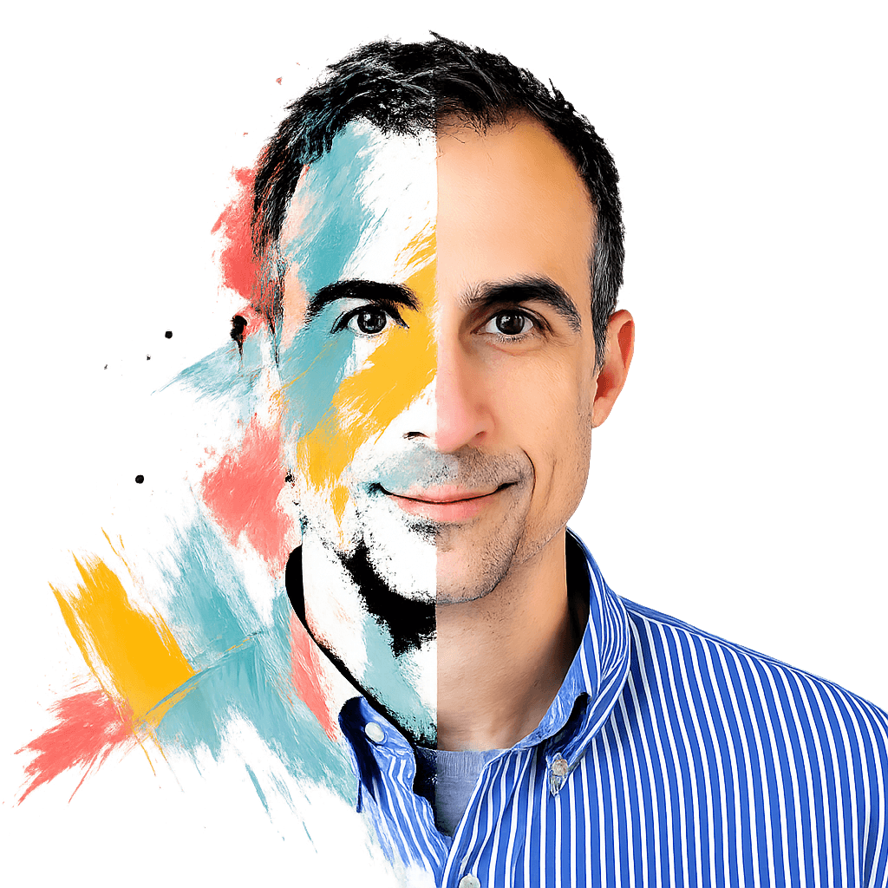

Building enterprise business applications with a balance of creativity, optimization, and maintainability.

Combining product thinking and engineering to create clean, engaging, and scalable business applications.
I believe great engineering is not measured by how much code is written, but by how effectively complexity is reduced.
My approach centers on building systems that are scalable, maintainable, and operationally efficient over the long term. I focus on minimizing unnecessary code, separating reusable library infrastructure from business logic, and decomposing monolithic systems into manageable, independently deployable components.
I prioritize architectures that are easy to reason about, extend, and maintain. This includes reducing redundant implementations, creating clean abstractions, and designing vertical-slice patterns that remain understandable as systems grow.
Complexity scales rapidly when systems become tightly coupled. I design loosely coupled services, microservices, and task runners that can evolve independently without creating cascading operational risk.
Efficiency matters at every layer of the stack. I optimize for:
The goal is to create systems that remain performant and cost-effective under scale.
I focus on long-term maintainability by:
Good systems should become easier to maintain over time, not harder.
Repetitive engineering work should be automated wherever possible. I build generated frameworks and tooling that keep frontend and backend systems synchronized automatically, reducing drift and improving reliability.
This includes:
I use AI not as a replacement for engineering rigor, but as a force multiplier for it. AI methodologies can significantly improve schema generation, database design strategies, code quality analysis, and developer productivity when integrated thoughtfully into the development lifecycle.
At the core of my engineering philosophy is a simple idea:
Build systems that are easy to scale, easy to reason about, and easy to change.
The best architectures minimize operational burden, reduce cognitive overhead for engineers, and create clear boundaries between systems. Every decision should move the platform toward greater clarity, resilience, and independence.
I can be contacted on LinkedIn or via email at cdavis@nullref.io.